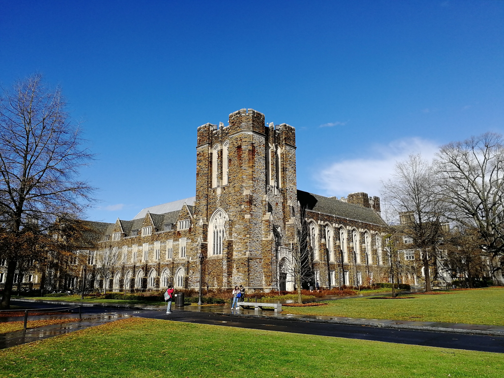

Konkuk University (Korean: 건국대학교, Hanja: 建國大學校) is one of the comprehensive private universities located in Seoul. The Seoul campus is located in the southeastern part of Seoul, near the Han River, and is served by a metro station of the same name. The Seoul campus has 13 undergraduate colleges and 13 graduate schools. Currently, 23,000 students are attending the 238,980m² Seoul campus.
Konkuk University was founded in 1931 by Dr. Yoo Seok-Chang, who founded the Minjung Hospital, based on the three virtues—sincerity, fidelity and righteousness as the founding principle of an establishment. In May 1946, Konkuk University was established as Chosun School of Politics (조선정치학관 / 朝鮮政治學館), a junior college for future political leaders, by Dr. Yoo Seok-chang.Thirteen years later, the school became a “comprehensive university” and changed its name to Konkuk (建國, meaning “founding a nation”). As strong believers in the role of higher education in maintaining Korea's sovereignty, the founder and his supporters chose the name in the hopes that Konkuk graduates would build and serve the nation. Dr. Yoo, whose pen name was Sanghuh, was raised by a father who moved to Manchuria to join the Korean independence movement. Trained as a medical doctor during the Japanese occupation, Dr. Yoo initially had opened the People's Hospital in 1931 to provide medical care to less fortunate Koreans. Before long, he turned his attention to young leaders in rural areas since agriculture was the main pillar of the economy. Dr. Yoo and his supporters, who would later become benefactors of Konkuk University, aimed to open a higher education institution for leaders who would enlighten the rural population. Opposed by the Japanese, the reform-minded group managed a private organization and developed their ideas for a little more than a decade.